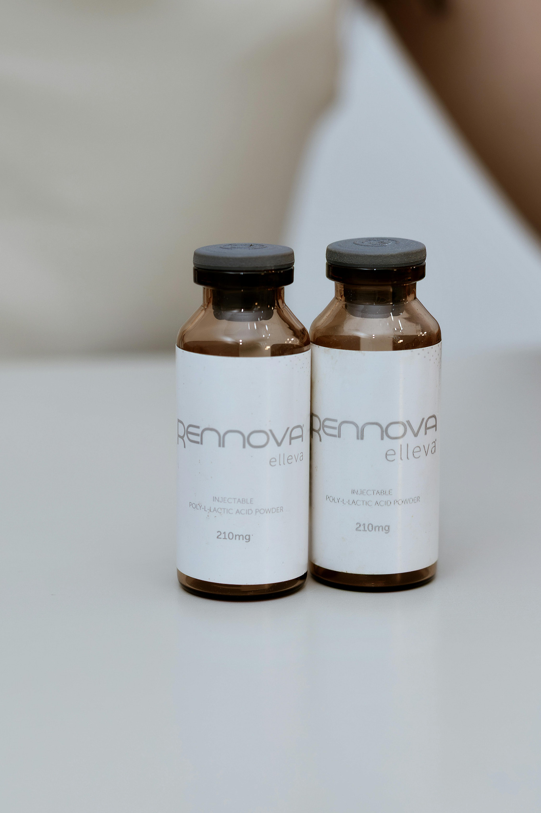
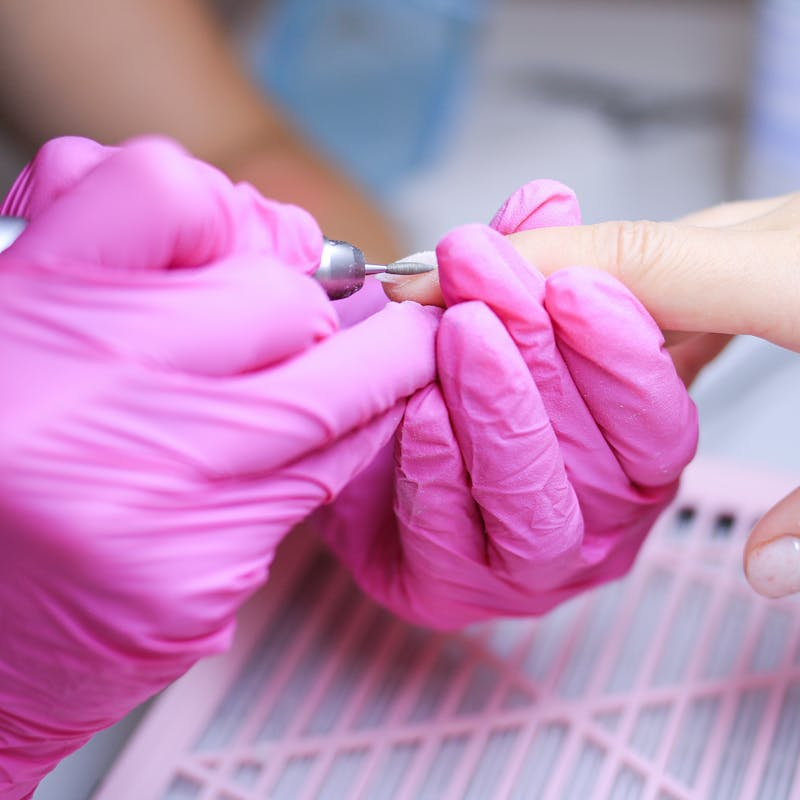
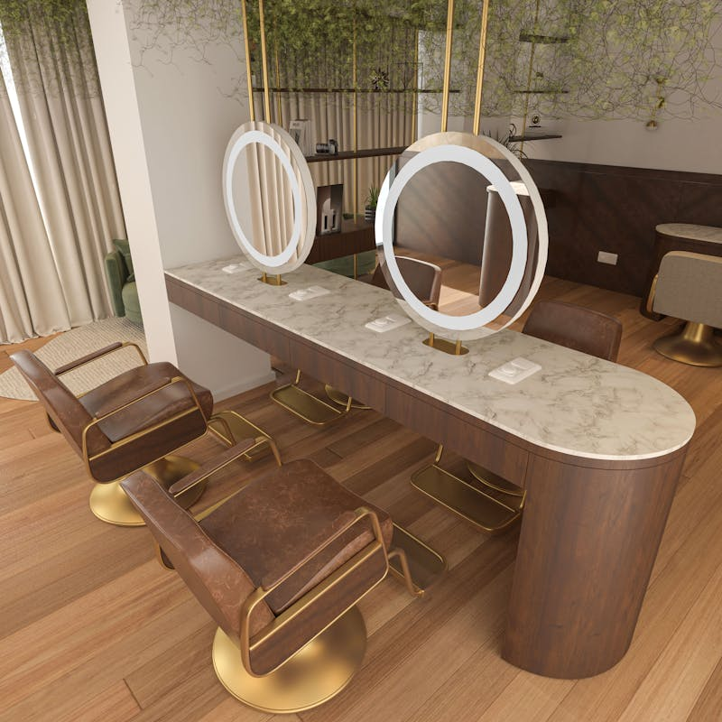

Olhar individual
Cada rosto e cada corpo são avaliados de forma personalizada, respeitando a identidade de cada paciente.
Procedimentos estéticos faciais e corporais pensados para realçar sua beleza de forma natural, respeitando sua identidade, seus traços e seus objetivos.

Cada rosto e cada corpo são avaliados de forma personalizada, respeitando a identidade de cada paciente.
A proposta é valorizar sua beleza sem exageros, com estratégia, equilíbrio e bom senso estético.
Um cuidado que une técnica, escuta e orientação para que você se sinta segura em cada etapa.
Tratamentos pensados para melhorar autoestima, bem-estar e confiança com uma abordagem natural e personalizada.

Procedimentos voltados para rejuvenescimento, harmonização, melhora da pele e valorização dos traços faciais.

Cuidados personalizados para quem busca bem-estar, autoestima e melhora da aparência corporal.
Avaliação e indicação de cuidados para textura, viço, qualidade da pele e prevenção dos sinais do tempo.

Tratamentos indicados de acordo com a necessidade de cada paciente, sempre com foco em naturalidade e segurança.

A Dra. Cleide Mendes acredita em tratamentos que acompanham o tempo, respeitam a identidade de cada pessoa e fortalecem a autoestima.
Seu cuidado une medicina, escuta e sensibilidade para indicar procedimentos que façam sentido para cada rosto, cada corpo e cada história.
“Sem exageros. Sem padrões prontos. Apenas o que faz sentido para cada paciente.”Falar com a clínica
A página pode reunir fotos, informações importantes e botões de contato para facilitar a decisão de quem encontra a clínica online.
Entre em contato pelo WhatsApp para tirar dúvidas, consultar horários disponíveis e agendar sua avaliação.
Você pode chamar pelo WhatsApp da clínica e consultar os horários disponíveis para avaliação.
Sim. Cada paciente é avaliado individualmente para entender o que faz mais sentido para seus objetivos.
Sim. O atendimento é organizado com horário marcado para oferecer mais conforto e atenção.
Tire suas dúvidas e consulte horários disponíveis diretamente com a clínica.
Falar agora